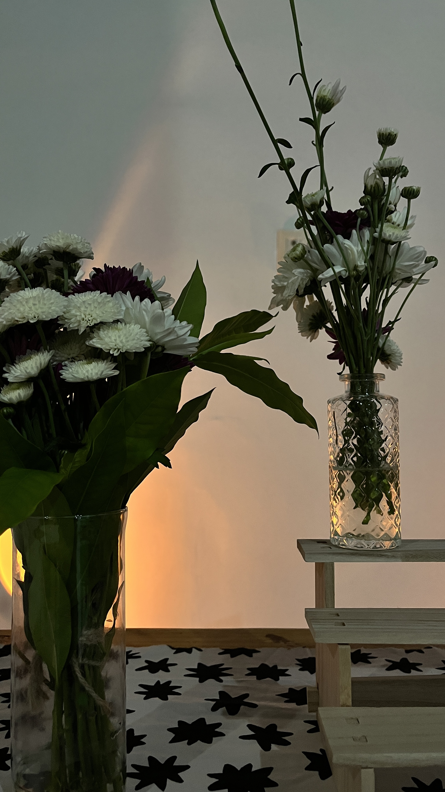

Floricultura
Buquês frescos, arranjos sob encomenda, vasos e plantas indoor. Flores escolhidas no CEASA pela manhã, conduzidas com técnica de design floral.
encomendar →
belém · pará
flores · café · ateliê
Um espaço onde o frescor das flores encontra o aroma do café,
feito para quem ainda gosta de demorar.
sobre nós
Casa Jardim nasceu da vontade de fazer Belém respirar mais devagar. Aqui, flores frescas chegam todas as manhãs, o café é torrado por gente que olha nos olhos, e o tempo — esse tempo bom — fica.
Somos floricultura, somos café, somos ateliê. Mas, principalmente, somos um endereço para quem busca beleza no gesto pequeno: um buquê escolhido para alguém, uma xícara servida com cuidado, uma manhã passada entre folhas e papel.
"o jardim não é só o que se vê — é o tempo que ele pede."

o que fazemos
Buquês frescos, arranjos sob encomenda, vasos e plantas indoor. Flores escolhidas no CEASA pela manhã, conduzidas com técnica de design floral.
encomendar →Cafés especiais, brunch leve e doces de fornada. Mesa para ler, conversar, ou simplesmente parar — entre vasos, livros e luz da manhã.
venha tomar →Encontros para aprender o gesto floral. Atualmente em cartaz: Arte Floral, workshop de 4h conduzido por Sarah Deck — vagas limitadas.
conhecer Arte Floral →Brunches, aniversários íntimos, lançamentos e celebrações pequenas. A casa inteira (ou só um canto dela) à sua disposição, com ambientação floral inclusa.
conversar →
em cartaz
workshop com Sarah Deck
Uma manhã com flores, técnica e silêncio. Quatro horas para aprender corte, hierarquia, composição — e levar para casa um arranjo seu, montado com as próprias mãos.
o espaço



visite-nos
endereço
Casa Jardim · Flores & Café
Belém · PA
horário
terça a sábado · 8h às 19h
domingo · 9h às 14h (brunch)
segunda · fechado
contato